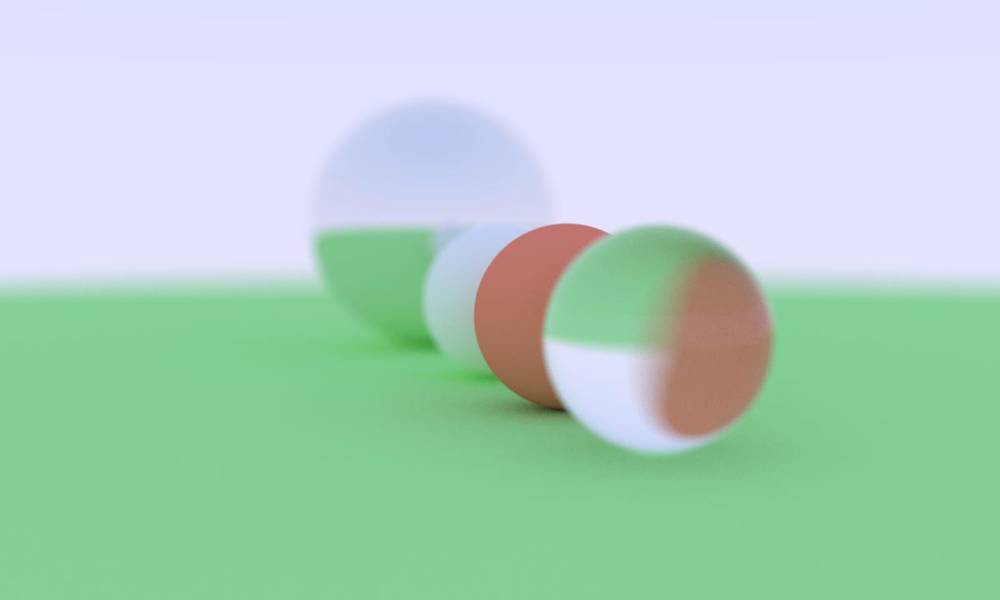

Soft-body CUDA simulation
Dec. 2024 | C++ / CUDA (School project)
The goal of this project was to simulate a soft body using CUDA. It is based on a spring-mass model.


The goal of this project was to simulate a soft body using CUDA. It is based on a spring-mass model.
I built a raytracer in OpenGL. It builds a BVH for any mesh (this bit of code was given by the teacher; I did pretty much everything else). A shader then accumulates each frame to yield better results.
It supports shadows, reflections, transparency, environment maps, and uses the Cook–Torrance specular reflectance model with microfacet distributions and a GGX distribution.
The results below were generated in a few seconds at most.


I wrote a program that parses BVH files, computes the skeleton's positions and applies a skinning algorithm.


For this project I implemented a physics simulation of particles that can be affected by various forces (gravity, Lennard-Jones potential) in 2D or 3D. The user can specify different parameters such as boundary behaviours or kinetic energy conservation. No external libraries were used, so a custom vector class was written to handle the computations.
The goal was to simulate many particles without having to wait too long, especially since the Lennard-Jones potential requires small time steps. The data structure was therefore an important part of this project.
The pictures below have been computed for a simulation of 8,000 particles over almost 400,000 physics steps in 20 minutes on my laptop.
Source code


This is a school project for which we chose the subject. With four friends, we decided to make a game using a game engine that I was developing together with one other member of the group.
The goal was to do everything from scratch, using only OpenGL and a few utility libraries. The objective was a multiplayer game in which players control a boat and navigate on an ocean.
Each member had a dedicated part of the project. Paul Colinot was in charge of physics and collisions. Hélène Hassan worked on the ocean, following Tessendorf's paper. Virgile Henry worked with me on the game engine architecture; he also made the 3D models and added the network code required for multiplayer. I worked on terrain generation, lighting, post-processing effects (ray-marched clouds, gamma correction, tone mapping, bloom), materials and the dynamic skybox.
Many things could have been done better during this project; however, we only had a limited amount of time. We also tried to keep the game engine independent of the game, which slowed us down somewhat because it was not always easy to access the components we needed.
More details are available in the project report (in French) that we submitted, although due to some submission constraints, parts of our work were left out.
Download report Demo video Demo video Game source code Game engine source code


Corys is a manufacturer of training and engineering simulators for the rail transport, energy and hydrocarbon industries. Their R&D team is actively transitioning from their old 3D engine to UE5 to enhance the visual quality of their simulators.
During my four-month internship I implemented new windscreen effects for rain, snow and dirt based on those of the previous engine. It was quite challenging to create such effects given the many constraints.
This project's goal was to modify the mesh of a 3D scan of a face by first approximating it with a Bézier surface.
A cut is first performed to apply a least-squares approximation with constraints around the borders, in order to compute a grid of control points for our Bézier surface. The control points can then be easily modified to obtain this final result. The approximated surface can finally be knitted back to the original mesh with a screened Poisson surface reconstruction.
I wasn't familiar with front-end programming (nor particularly interested in it), but I wanted to have a website to easily share my projects. So I decided to make this one. The goal was not to have something perfect, but something that works.
I built it in roughly three weeks, since I had to learn HTML, CSS and JavaScript, as well as the specifics of WebGL compared to OpenGL 3. The background animation is entirely made with WebGL: it consists of a vertex shader and a post-process fragment shader.
It is definitely far from perfect, and the code could be cleaner (I'm no JavaScript expert), but I didn't want to spend too much time on it.
Source codeI made this game with a friend during the Ludum Dare 51 game jam. It was made using Unity in under 24 hours, as our participation was a last-minute decision (compared to 72 hours usually). We ended up 501st out of 1,703 participants.
Ludum Dare Play gameA basic CPU raytracer I worked on to learn Rust, following the "Raytracing in One Weekend" series.
This raytracer can handle spheres, depth of field and three types of material:
I decided to stop at this point because I wanted to make a GPU-accelerated version of the project later.
While computing the output image, the current state is displayed in a window managed on a different thread.
Raytracing in One Weekend series Source code
During this internship, I designed an algorithm that filters a heightmap to generalise a terrain (see the before/after comparison below).
For this I used a software called Gratin, designed by a member of the team I was in. This software lets you connect nodes: each node takes some textures as input, executes a shader by sampling the textures and outputs a new one.
I encountered some bugs during this internship and one of them was particularly interesting, so I have also included the resulting image below.
Gratin repositoryDuring my "CPGE" (two years of study which act as an intensive preparatory course), I discovered that I could do things in 3D. Here are some of the projects I made:


During my "CPGE" (two years of study which act as an intensive preparatory course), I made several Python programs inspired by my courses.
Here is a list of some of them: